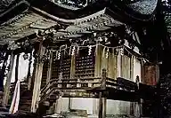
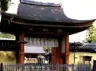
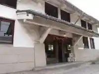
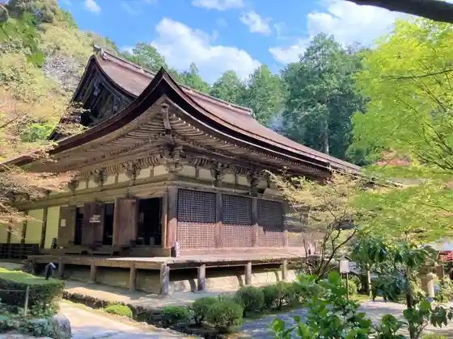

Taiko Sha
Aisho, Shiga · 0749-37-3211 · Official / source link

Homan Shrine
Aisho, Shiga · 0749-42-3448 · Official / source link

Fujii Honke
Aisho, Shiga · 0749-42-2080 · Official / source link

Kongo Wa Tera
Aisho, Shiga · Official / source link

Nihonryori Seiseki Takehira Ro
Aisho, Shiga · 0749-42-4007 · Official / source link
Echigawa Eki Komyuniteihausu (Ruburu Echigawa)
Aisho, Shiga · 0749-42-8444 · Official / source link
Nakasendo Echigawa Yado
Aisho, Shiga · 0749-42-7683 · Official / source link
Homan Tera
Aisho, Shiga · 0749-42-3906 · Official / source link
Joyato
Aisho, Shiga · Official / source link
Heisei no Meisui Hyakusen (Yama Hiko Yusui)
Aisho, Shiga · 0749-42-8017 · Official / source link
Aisho Ritsu Rekishi Bunka Museum
Aisho, Shiga · Official / source link
Koto Miyama Kan Aisho
Aisho, Shiga · 0749-37-2333 · Official / source link
Omitetsudo Echigawa Eki
Aisho, Shiga · 0749-22-3303 · Official / source link
Megata Castle Ruins
Aisho, Shiga · 0749-42-8017 · Official / source link
Omi Jofu Dento Sangyo Hall
Aisho, Shiga · Official / source link
Yumemachi Terasu Echi
Aisho, Shiga · 0749-42-3246 · Official / source link
U So Kawa Gorge (U So Kawa Dam)
Aisho, Shiga · 0749-42-8017 · Official / source link
Echigawa Fureai Honjin (Kyu Omi Ginko Echigawa Branch)
Aisho, Shiga · 0749-42-2165 · Official / source link
Aisho Supotsu Center
Aisho, Shiga · Official / source link
Aisho Town Hall
Aisho, Shiga · 0749-42-4111 · Official / source link